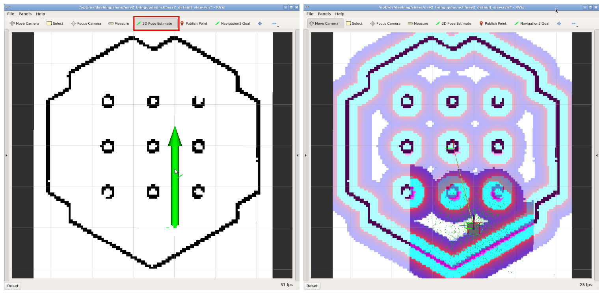

ROS2 SLAM
Referência: ROS2 SLAM
SLAM (Simultaneous Localization and Mapping) ou Mapeamento e Localização Simultâneos é uma técnica usada por robôs e veículos autônomos para construir um mapa do ambiente e, ao mesmo tempo, localizar sua posição nesse ambiente. A ROS2 oferece uma série de pacotes que permitem a execução de algoritmos de SLAM no Turtlebot3.
Veja o vídeo abaixo de demonstração do SLAM no Turtlebot3:
Instalando os pacotes necessários
Para instalar os pacotes necessários para o SLAM, execute os comandos abaixo:
cd /home/borg/colcon_ws/src/my_simulation/atualiza_infra
git stash
git pull
./atualiza_infra_2024.sh
Executando o Mapeamento
Para iniciar o mapeamento do ambiente, devemos executar o pacote denominado Cartographer. Para isso, execute os comandos abaixo:
ros2 launch turtlebot3_cartographer cartographer.launch.py use_sim_time:=True
Agora, abra um novo terminal com o teleop para controlar o Turtlebot3:
ros2 run turtlebot3_teleop teleop_keyboard
Com o teleop aberto, movimente o Turtlebot3 pelo ambiente para que o mapeamento seja realizado. Após finalizar o mapeamento, execute o comando abaixo para salvar o mapa:
ros2 run nav2_map_server map_saver_cli -f ~/map
O mapa será salvo no diretório ~/map com os arquivos map.pgm e map.yaml.
Visualizando o Mapa
O mapa será salvo como um arquivo de imagem no formato pgm. Como no exemplo abaixo:
O mapa ilustra o ambiente mapeado, onde os pixels pretos representam obstáculos, os pixels brancos representam áreas livres e os pixels cinzas representam áreas desconhecidas.
Navegando no Mapa
Agora para navegar no ambiente, primeiro feche todos os terminais abertos e execute o pacote Navigation, através do comando abaixo:
ros2 launch turtlebot3_navigation2 navigation2.launch.py use_sim_time:=True map:=$HOME/map.yaml
Uma vez que o pacote de navegação esteja em execução, vamos primeiro definir a posição inicial do Turtlebot3 no mapa, para isso, clique no botão 2D Pose Estimate no Rviz e clique e segure o botão esquerdo do mouse no local onde o Turtlebot3 está localizado no mapa. Em seguida, arraste o mouse para a direção que o Turtlebot3 está apontando e solte o botão esquerdo do mouse, conforme ilustrado na imagem abaixo:

Extraindo a Posição do robô no Mapa
Quando estamos utilizando o Navigation, o tópico /odom por si só não é suficiente para extrair a posição do robô no mapa, porque representa uma abstração da posição LOCAL do robô.
Para utilizar a posição GLOBAL do robô, devemos combinar o tópico /odom com o tópico /tf extraindo assim a posição do robô no mapa. O tópico /tf contém as transformações entre os diferentes frames do Turtlebot3, incluindo a transformação entre o frame odom e o frame map.
Felizmente, isso já foi implementado e está disponível no robcomp_util, bastando apenas herdar do arquivo amcl.py a classe AMCL no lugar da classe Odom para extrair a posição GLOBAL do robô.
Definindo o Ponto de Destino da Navegação
Agora, para definir o ponto de destino da navegação, clique no botão 2D Nav Goal no Rviz e clique e segure o botão esquerdo do mouse no local onde deseja que o Turtlebot3 vá. Em seguida, arraste o mouse para a direção que deseja que o Turtlebot3 esteja apontando e solte o botão esquerdo do mouse.
Combinando Mapeamento e Navegação (SLAM)
Agora, vamos aprender a combinar o mapeamento e a navegação, executando o pacote Navigation e o pacote Cartographer juntos. Para isso, execute o comando abaixo (cada um em um terminal diferente):
ros2 launch turtlebot3_cartographer cartographer.launch.py use_sim_time:=True
ros2 launch turtlebot3_navigation2 navigation2.launch.py use_sim_time:=True \
map:='topic://map'